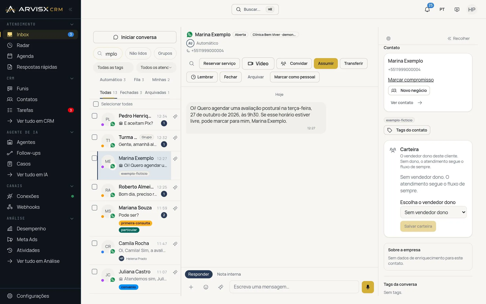
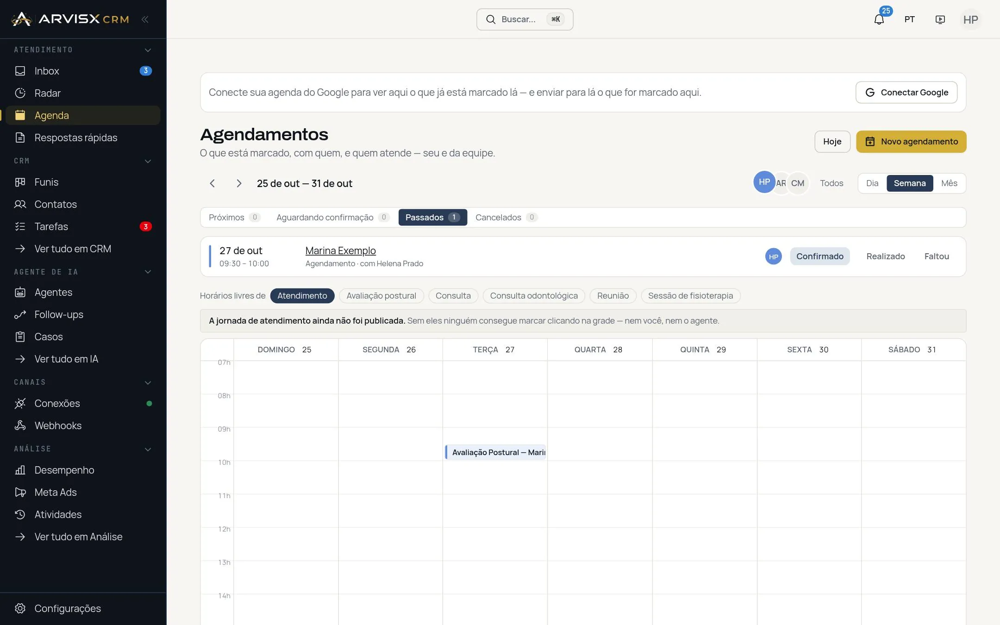
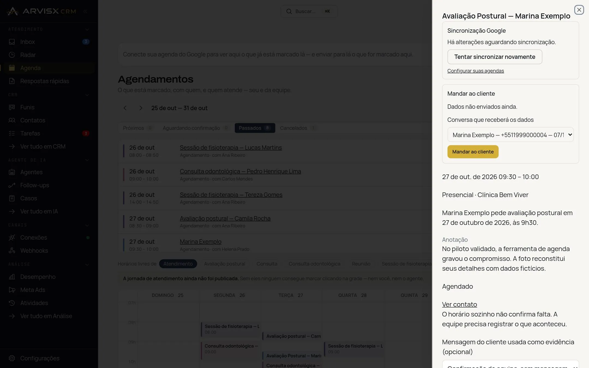
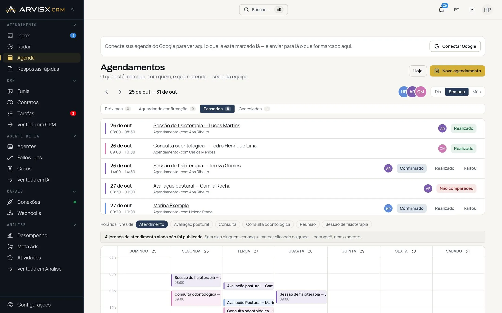

Histórias por nicho
Clínicas
Recepção, horários e continuidade do cuidado com decisões clínicas reservadas aos profissionais.
Da pergunta ao horário combinado
- Empresa
- Clínica Bem Viver (fictícia)
- Contexto
- Marina Exemplo pede avaliação postural em 27 de outubro de 2026, às 9h30.
- Resultado
- Avaliação postural registrada e resposta de confirmação.
Telas reais com estados reconstituídos. A sequência não comprova a execução do motor de IA; envio externo simulado. As fotos desta sequência são reconstituições com dados fictícios, não a gravação da execução.
-
1. ChegadaUma primeira consulta
- O cliente
- Marina Exemplo pergunta se pode marcar uma consulta inicial.
- A operação
- O roteiro começa com a recepção identificando o serviço desejado, sem pedir um relato clínico detalhado no chat.
- O ganho
- A conversa começa pelo que é necessário para organizar a visita.

- Uma primeira consulta
-
2. QualificaçãoDisponibilidade compatível
- O cliente
- Marina solicita 27 de outubro às 9h30, se houver disponibilidade.
- A operação
- No roteiro, o agente consulta a disponibilidade antes de marcar. A foto reconstitui a leitura do compromisso na agenda local.
- O ganho
- Preferência e agenda são consideradas juntas.

- Disponibilidade compatível
-
3. AçãoEscolha explícita
- O cliente
- Marina autoriza a marcação para o horário pedido, se estiver livre.
- A operação
- No roteiro, a ferramenta de agenda grava o compromisso. A foto reconstitui seus detalhes com dados fictícios.
- O ganho
- Escolher um horário não se confunde com garantir uma vaga sem registro.

- Escolha explícita
-
4. ContinuidadeA recepção acompanha
- O cliente
- Marina Exemplo quer saber se precisa de outra confirmação.
- A operação
- A recepção confere o compromisso na lista e esclarece a situação registrada; orientações clínicas ficam com o profissional.
- O ganho
- A equipe consegue continuar a partir do compromisso, sem refazer a conversa.

- A recepção acompanha
Para montar isso no seu CRM
- Agentes › Instruções, capacidades e conhecimentoConfigurar e publicar somente as capacidades necessárias ao agente do roteiro.
- Inbox › Conhecendo a InboxReconhecer a conversa e a ficha do contato.
- Agenda › A agenda de cada pessoa da equipeConferir a agenda de um profissional.
- Agenda › Marcar um novo agendamentoRegistrar o compromisso com o contato e quem atende.
- Agenda › A lista de compromissosAcompanhar a situação do compromisso na lista.